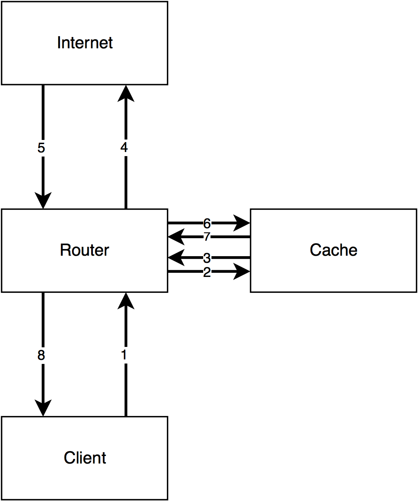

WCCP - Redundancy and clustering of caches and WAN optimizers
What is WCCP?
WCCP is a service offered on Cisco routers and switches that makes it simple to deploy web caches and WAN optimizers among other things. It offers a lot of functionality including failover, redundancy and clustering, and complete control of ports while requiring minimal configuration changes on the switch or router; almost all of the config is done on the cache or WAN optimizer, allowing your vendor to do what they do best. This power and configuration simplicity comes at the cost of a few pretty serious caveats. I'll get onto those, but first I need to explain how traffic flows. For those who already know WCCP, I'm going to be focusing on L2/Mask inbound redirection, so if you need guidance on GRE/Hash and/or outbound redirection, you'll want to look elsewhere. Also, this post is going to focus soley on caches. WAN optimizers have some trickery that I don't feel like covering right now, but there are some good guides out there on how to deploy those. Finally, I don't really want to cover how web caching works. I'll save that for another article.
How WCCP works (roughly)
Check out this diagram:

This is how I explain the flow of WCCP to customers. The client makes a request (1), the router redirects that request to the cache (2), the cache goes and fetches the request from the webserver via the router (3 + 4), the webserver responds to the cache (5 + 6), and finally the cache sends the response to the client (7 + 8). It's important for the traffic to flow in this "sideways T" configuration. If you don't do it this way, things will break. Next, a quick config primer.
WCCP config on the router or switch
The configuration for WCCP is stupid simple on the router. Let's say that in the example above, there are three VLANs. VLAN 10 is for the clients, VLAN 20 is for the cache, and VLAN 30 is for the internet. Next, let's say that we want to redirect port 80 TCP traffic (HTTP). WCCP uses service groups to allow you to redirect several ports at once. These can range from 0 to 100, but 0 is a special, static group that only redirects destination port 80 TCP traffic. On a router, it can also be written as web-cache. In this example, we'll use the web-cache service group. Here's what the config would look like on the router:
ip wccp web-cache interface vlan 10 ip wccp web-cache redirect in
Seems too good to be true, right? Well, yes and no. That really is everything that's needed on the router. You'll need to configure your cache however. The cache needs to inform the router that it exists and that the router should send traffic to it. The cache needs to be set up with the same service group, and it needs to have the port you want to redirect. If you're using the web-cache service group then it must be TCP dest 80. I'm not going to show you this part because the configuration for a Superlumin cache vs. a Bluecoat vs. Cisco stuff is completely different.
So, with that said here's what's happening. WCCP will watch all packets coming in on VLAN 10. When it sees a packet that matches what the cache has told it to send over (in this case, port 80), it punts it over to the cache server at which point regular routing takes over. There are a couple different ways the traffic can get sent over to the cache, but in most cases just pick L2 redirect. It's the simplest and lowest overhead option. This is also configured on the cache. Now, onto the caveats!
Caveat Emptor
-
Circular redirection
This is a really easy trap to fall into. WCCP is stupid. Like, really, really stupid. If you tell it to redirect TCP port 80 traffic then by god it's going to do it. This means that if the cache is behind the interface that's redirecting traffic (VLAN 10 in our above example) then when the cache goes to make a request out to the internet, the router will send it back to the cache, and it will cycle on and on. There are two solutions to this problem.- Have a separate VLAN for the cache and the clients
- Configure WCCP with an ACL that prohibits redirecting traffic from the cache
If I had my way, I would always, always do option 1. it's cleaner and will always work, regardless of what router or switch you have. If you have to take the second route then it's imperative that you check the docs for your router or switch, because the ACL can have different requirements. Really though, just use option 1. Please.
-
Layer 2 Adjacency
When using L2 redirection, it's important that the cache be layer 2 adjacent to the router. When I first learned this my brain immediately thought what the hell does that mean? To put it simply, no routing can happen between the cache and the router. The cache could be hooked up to the router by twenty switches and it will work fine, but if any routing has to occur then L2 adjacency is broken and no redirection will happen. You can typically see this by runningshow ip wccp <service-group> detail, although this isn't the same across all routers and switches. -
Routers gotta route, yo
WCCP doesn't operate on switched traffic. What do I mean by that? Basically, if traffic is flowing through your router or switch without being routed to that router or switch then it's not going to redirect. WCCP is not transparent in this regard, as compared to a Linux bridge sitting in the flow of traffic. In addition, the clientside and internet facing side of the router or switch must be different subnets. That device needs to route.
Final thoughts
WCCP is awesome and complicated. This post doesn't touch on a lot of the finer details of the protocol. If you're going to be working with WCCP on a regular basis, I'd recommend reading through the Cisco doc I linked at the beginning of the post.
Comments
Comments powered by Disqus